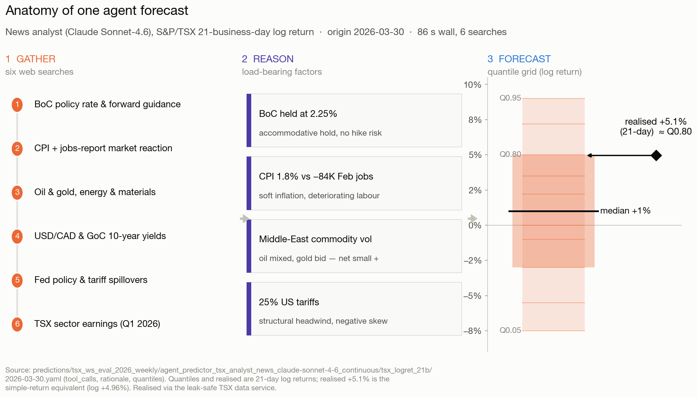
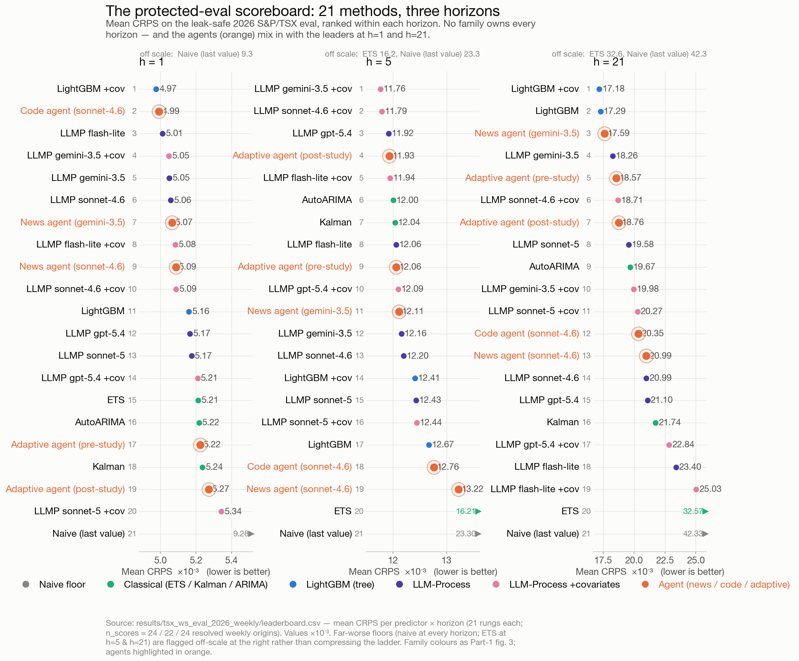
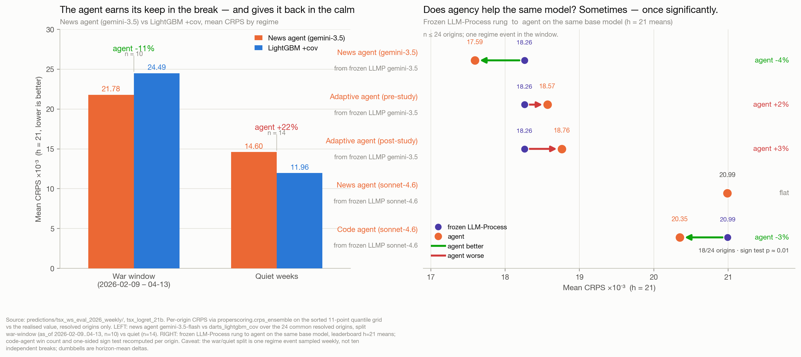
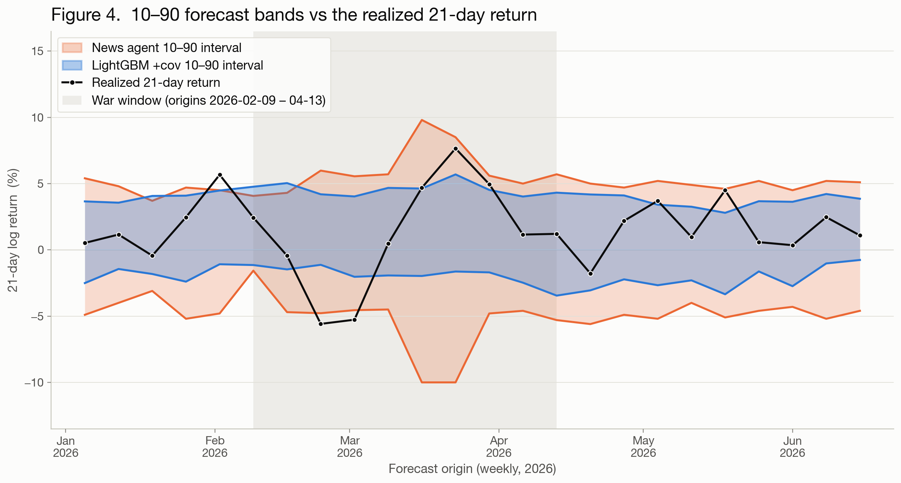
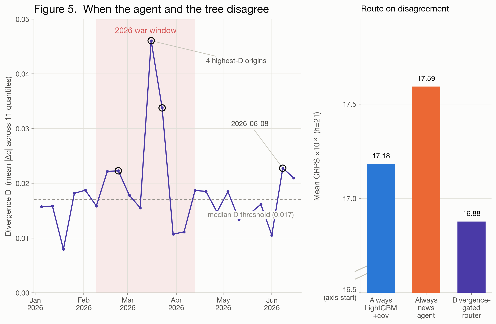
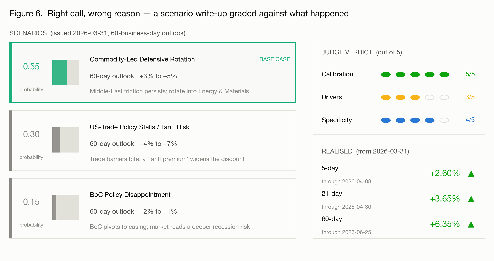

The next rung: agents that read
Part 1 ended on a frozen LLM that could emit a genuine predictive distribution but saw only numbers and a short description of the series. It stayed quiet exactly where the series was about to get loud, because the cause of every regime break was written in language, not in the price history. The next rung hands the same forecaster the ability to go out and read the news for itself.
The analyst agent keeps the task identical (a full quantile grid for the log return at 1, 5, and 21 business days), but before it answers it runs web searches, reads what it finds, and writes a rationale. The hard part is leakage. Our guard against it is two-layered, and we want to be honest about its limits. Each forecast carries a harness-authoritative as-of date that the agent cannot override, and every query is scoped to it; a second LLM then verifies that each retrieved snippet predates that cutoff and discards anything that doesn’t. This is best-effort, not a proof, since a model can still infer the future from context it was trained on, but it keeps the blatant leaks out. One rung further, the code-executing analyst gets a sandboxed Python environment and can compute its own diagnostics rather than eyeballing numbers in a prompt: it can pull the series into a dataframe, measure the trailing volatility and drawdown, and check a claim before committing to it.
What does one forecast actually look like? Take the news analyst (on Claude Sonnet 4.6) standing on 2026-03-30, at the trough of the war-driven drawdown. It fired six date-scoped searches (Bank of Canada policy, CPI and the Labour Force Survey, oil and gold, USD/CAD and GoC yields, US tariff spillovers, TSX sector earnings), then wrote a rationale that reads like a desk note: an accommodative BoC on hold at 2.25%, soft 1.8% CPI against a deteriorating labour market (−84K February jobs, 6.7% unemployment), commodity volatility from Middle-East tension, and 25% US tariffs as the structural headwind. From that it reasoned out a distribution: a modest positive median (+1%) off a deep mean-reversion anchor, elevated volatility, and a deliberate negative skew, with the left tail fattened for tariff escalation and the right tail (Q0.95 at +9%) reserved for “tariff relief or commodity-driven surge.” The realized 21-day move, +5.1%, landed almost exactly on its Q0.8: well inside the distribution, but in the upper reaches the agent had explicitly reserved for an outcome it considered unlikely. The rally that produced it lived in that right tail.

✥ Click to enlargeThe same scoreboard
An agent that reads is still just another predictor, so it has to earn its place the way everything in Part 1 did: slotted into the same rolling-origin sweeps and scored with CRPS beside the naive floor, the classical methods, LightGBM, and the frozen LLMPs. Same origins, same cutoff, same scoring.
The honest expectation, set by Part 1, is that reading the news does not automatically win, and at h=1 it doesn’t. On the protected 2026 eval the Part 1 board clusters near CRPS 0.0050 against a naive floor of 0.0093, and the two news-agent variants (the same harness on Claude Sonnet 4.6 and Gemini 3.5 Flash; stated cutoffs are in Part 1’s table) land mid-pack at 0.00507 and 0.00509, indistinguishable from the frozen models. For a one-day-ahead return, where the move is close to unforecastable, a news scan has little to add over a well-shaped distribution. The one agent that thrives there is the code-executing analyst (also on Sonnet 4.6), second of twenty-one and a hair behind LightGBM-with-covariates. Its style of working, eleven code runs per forecast, is essentially statistics, and at one day out, with the whole top of the board inside a 2% spread and direction a coin flip, that is most of what there is to win. Step through the horizons, though, and the board reorganizes by family. At h=5 the language models sweep: the top five methods are all LLM-based, and the two LightGBM configurations fall to 14th and 17th of twenty-one. The week horizon appears to favour the LLMs’ fatter, more skeptical distributions over LightGBM’s tight quantiles. At h=21 the picture changes again: the LightGBM configurations retake the lead, but three of the top seven methods are agents, led by the news agent (on the lighter model) at third, ahead of every frozen LLMP on the board.

✥ Click to enlargeTwo wrinkles keep that story honest. First, the ranking is model-dependent. The same agent harness on a heavier model finishes mid-pack at h=21, so “agents read the news” is not yet a claim about agents in general; it is a configuration that has to earn its place, model by model. One point in the lighter configuration’s favour is that it runs on Gemini 3.5 Flash, whose stated knowledge cutoff (January 2025) predates the protected window by a full year, so its third place cannot be memorized knowledge of the period. The heavier harness runs on Claude Sonnet 4.6, whose training data extends into January 2026 (see Part 1’s cutoff table). Second, the paired comparisons are weaker than they look, though at least they are cutoff-neutral: agent and frozen base share one model, so anything memorized cancels out. At h=21 the code agent beats its own frozen base model at eighteen of twenty-four origins, the largest paired count in the study, but the margins behind the count are small, and a test that weighs them, or that respects how heavily the origins overlap, lands the result inside noise. The code agent also shows none of the news agent’s break-window behaviour: it computes from the same history the conventional methods see, and it fails where they fail. Where an agent wins seems to be determined by what it reads.
There is one more problem with ranks: they average over the thing we most care about. Split the h=21 origins into the ten inside the war window and the fourteen quiet ones, and the news agent’s third place decomposes into two opposite averages: roughly 11% better than LightGBM-with-covariates at the break, and roughly 22% worse on quiet weeks, as if it pays an LLM-noise tax whenever there is nothing to read. And when we pushed on this, the tidy story gave way. The break-window edge rests on a single origin where LightGBM blew up and the agent did not. Remove that week and the 11% becomes 2%, and the agent records the worse score on six of the ten break origins. So what we really have is one avoided blowup, not a dependable edge when the regime turns.
We don’t read this as a defect in the methods so much as a limit of the window. Twenty-four weekly origins at a one-month horizon overlap into roughly five independent observations containing one regime event, which is not enough to resolve differences of this size in any direction. We treat these as observations worth checking, not results to build on.

✥ Click to enlargeOne more signal hides in the comparison, and it may matter more than the ranks: when the agent disagrees with LightGBM. The gap between the two quantile grids behaves like an event detector. Three of its four largest values sit at origins bracketing the war drawdown, and the fourth fired on a perceived risk (an early-June correction off a record high) that never confirmed. Decompose the gap and the signal lives in the width. How much wider the agent’s 10–90 interval runs than LightGBM’s tracks the size of the move that follows, while how far it shifts its median tracks nothing at all. In other words, the agent’s useful signal is how uncertain it says it is, not which way it leans. That said, the width signal leans heavily on the war window, and at twenty-four overlapping origins we cannot separate it from luck. We also tried a divergence-gated router that hands the forecast to the agent whenever the two disagree sharply. It looks interesting, but this window simply does not have the statistical power to tell whether it is a real mechanism, so we report it as an idea rather than a result.
The descriptive facts, though, stand on their own. At the war trough the agent’s interval ran three times LightGBM’s, and at one break origin its median matched LightGBM’s almost exactly while its interval ran 2.5× wider: a pure alarm, with no directional bet. LightGBM’s interval, built from trailing volatility, barely moved all half-year. So the mechanism on offer is not that the agent predicts direction better. It is that the agent can notice, from the news, that the quiet period may be ending, and say so by widening. That suggests a concrete job in a production pipeline: the agent runs alongside the conventional forecasters, and when its distribution diverges sharply from theirs it raises an alert, kicking off a deeper investigation or bringing in a human expert with a stake in the prediction target. On this evidence we consider that a hypothesis worth testing properly, not a finding we can stand behind yet.

✥ Click to enlarge
✥ Click to enlargeA note on cost, said plainly: an agent forecast runs on the order of 100× the tokens of an LLMP call (tens to hundreds of thousands against a couple thousand), so whatever it buys on the scoreboard, it buys at a real price.
What the score can’t see
CRPS ranks distributions. It cannot tell you whether a forecaster was right for the right reasons, and for an analyst agent, the reasoning is the product. So we ran a second track. At four landmark origins, the agent (on Gemini 3.1 Flash-Lite, whose stated January 2025 cutoff predates all four origins) writes a scenario analysis with weighted scenarios, named drivers, and return ranges, and an LLM judge from a different model family (Claude Sonnet 4.6), given only the realized returns, scores it 1–5 on three axes:
- Drivers. Did the forces the write-up named actually move the index? Five means the cited drivers are exactly what happened; one means they are unrelated.
- Calibration. Did the stated probabilities put the most weight on the scenario that matched the realized direction? This is about the weighting, not about whether any one range was hit precisely.
- Specificity. Is the write-up concrete and checkable, with dated figures and named catalysts, or is it generic hedging that would fit almost any week?
Then we read the artifacts ourselves, against the event timeline.
The 2026 war low, 2026-03-31, is the most instructive case. The agent nailed the shape: its base case, “Commodity-Led Defensive Rotation” at 0.55 probability, called +3% to +5%, and the market delivered +3.65% at 21 days and +6.35% at 60. The judge, seeing only those returns, awarded calibration 5/5, with direction and range dead-on. But the mechanism was wrong. The base case bet on persistent Middle-East friction holding oil and gold up, and the rally that actually arrived came from the ceasefire: oil plunged, and equities rose on the relief. The agent landed at the right level through the wrong engine. And the judge, grounded only in realized returns, correctly withheld drivers credit (3/5), because it cannot confirm a causal chain it cannot see. Catching the inverted mechanism took a human reading the write-up against what actually happened. That is the whole point of the exercise.
The pattern repeats. On 2025-04-01, tariff eve, the agent had the right driver in its bear case (a tariff-driven earnings downgrade) but sized it at 0.15 probability and a −5% to −8% magnitude, against a drawdown that ran to −12.8%: a clear under-reaction to a publicly telegraphed catalyst (calibration 2/5). Lay the four verdicts side by side and you can see the rubric’s dimensions measuring different things:
| Origin | Moment | Drivers | Calibration | Specificity |
|---|---|---|---|---|
| 2025-04-01 | tariff eve | 3 | 2 | 4 |
| 2025-04-08 | rebound eve | 2 | 4 | 3 |
| 2026-02-25 | pre-drawdown | 3 | 2 | 3 |
| 2026-03-31 | war low | 3 | 5 | 4 |
Calibration swings from 2 to 5, while drivers never clears 3: the judge systematically refuses to certify causal chains it cannot verify from the returns alone. A cutoff note keeps that honest. The judge’s training data runs through January 2026, so at the two 2025 origins it may well know the tariff story from memory, and it withheld drivers credit anyway, in-knowledge and out. The restraint comes from the rubric’s grounding, not from ignorance, and only the 2026 verdicts test it against genuine blindness. A forecaster can land the number and miss the reason, or read the world well and misweight it, and only scoring these separately shows which one happened.
What we take away from this track: for analyst agents, the written artifact carries much of the value, and the score is a floor rather than the whole story. Automated judging scales, and human trace-reading catches what the judge structurally can’t. We think you need both.

✥ Click to enlargeThe honest limit
There is a ceiling here that no methodology fixes. An agent that reads the open web to forecast a series cannot be perfectly firewalled from the future it is predicting. Our as-of date and verifier keep out the obvious leaks, but retrieval is porous, and stated model cutoffs are vendor claims we can report, not verify. Part 1’s cutoff table lists them, and for the Sonnet-4.6-based agents the stated training data reaches into the protected window’s first month. A stray dated-wrong snippet, or a fact the model simply knows, can tint a “2026-03-30” forecast with April’s hindsight. Every offline agent score is therefore optimistic at best. This is the same caution Part 1 raised for the LLMs, only sharper, because the agent is actively reaching for information rather than passively holding it. The protected 2026 window narrows the gap; it does not close it. A strong offline result is a reason to look harder at an agent, not yet a reason to trust its number, which is exactly why Track 2 reads the reasoning rather than resting on the CRPS.
The honest destination is the one ForecastBench pointed at in Part 1’s opening: live evaluation, scoring forecasts whose answers do not exist yet. When the outcome hasn’t happened, leakage isn’t a guard you hope holds; it is structurally impossible. That is the only setting in which an agent’s news-reading skill can be measured without an asterisk. We come back to that at the end.
The adaptive agent: pre/post on the TSX
Every agent so far was frozen. The last rung asks what happens when the agent is allowed to study. We gave the analyst (on Gemini 3.5 Flash, whose January 2025 cutoff predates the entire protected window) one self-directed session of fifty turns, about seventy minutes, with the full TSX history in a sandbox, a hypothesis ledger, and an evidence gate: nothing enters its strategy file without recorded confirmations. Then we evaluated the same agent on the protected window twice, frozen both times, seed strategy versus studied strategy. The scoreboard did not move: same origins, same scoring, and per-origin wins were a coin flip at every horizon.
The session’s real product is a finding about the gate itself. The transcript shows genuine empirical work: dozens of sandboxed analyses over twenty-five years of data, including an unprompted “Canadian holiday catch-up study” of the exact calendar seam our own pipeline had once mishandled. But every hypothesis that graduated collected its three required confirmations back-to-back, within the same session, from the same study that proposed it. That satisfies the letter of an evidence gate at a speed that hollows out its spirit. We expect anyone building a self-improving agent to run into this failure mode.
A single session can only confirm hypotheses against the past that generated them. Actual evidence requires hypotheses meeting forecasts whose outcomes don’t yet exist: an agent that keeps learning as its forecasts resolve, evaluated against a frozen copy of itself. Evaluating adaptive agents that way, and treating the harness itself as an optimizable system in the lineage of ADAS, the Darwin Gödel Machine, and ALMA (which meta-learns the agent’s memory design rather than hand-engineering it), is where our attention goes next.
What’s next
One problem, one series, one score. From a naive floor to a frozen LLM to an agent that reads the news, every method answered the same question the same way, and each rung taught something the last couldn’t.
It’s worth saying plainly why the margins in this series are so thin: we chose one of the hardest forecasting problems there is, on purpose. A major equity index is the output of a market whose entire job is to price new information before you can, so when an agent reads a headline, it is racing the very mechanism that generates its target. Small visible edges say as much about the problem as about the paradigm. The same ladder pointed at a series no efficient market prices (a demand curve, an operational load, a policy-linked quantity) is where this machinery has real room, and that transfer is exactly what the harness was built to make cheap. If you’re starting tomorrow:
- Begin with the naive floor and the classical methods. They are nearly free, fully interpretable, and genuinely hard to beat. This is the honest bar everything else has to clear.
- Add covariates and ML only where they earn their keep, horizon by horizon. The panel that helps at one horizon can add noise at another.
- Reach for agents when you want them to read the world, not to squeeze out a marginally better score, and evaluate them accordingly: read the artifacts they produce, not just the CRPS.
The idea we find most interesting, though, is the one this retrospective could only raise, never settle. The agent’s distinctive behaviour was not forecasting the direction better. It was reacting to context: widening when it read something unsettling, and diverging from the conventional methods exactly when the world was moving. If that holds up, a production pipeline for something like a market index gets built as a mix rather than a contest: cheap, well-calibrated models carrying the ordinary weeks, with an agentic layer alongside them raising an alert when the weeks stop being ordinary. We have not shown that this works. We have seen one regime event through a two-dozen-origin window that behaves like five. What we have is something narrower and, we think, more useful: a hypothesis precise enough to pre-register. The alert rule can be stated today, committed to before the outcomes exist, and judged on live data. Whatever credibility we have in proposing it comes from having tried to break it and reported the break.
Why not just run a longer backtest and settle it now? Because for an agentic forecaster, that door is closed, and seeing why may be the most durable lesson in this study. To resolve a regime-conditional claim you need many regime events, so you must reach further back into history. But the further back you reach, the more likely the model has already read that history, and leakage inflates exactly the methods under test. Protect against leakage with a recent post-cutoff window and you are back to roughly five independent observations. You cannot buy statistical power with history when your forecaster may have memorized the history. Notice who escapes the squeeze: LightGBM can be backtested to 2005 without a qualm. The bind is specific to forecasters that read, and it is why we think agentic forecasting requires a different evaluation protocol rather than merely benefiting from one. Live evaluation, scoring forecasts whose outcomes do not yet exist, is the only setting where leakage is structurally impossible, and where the independent windows, run forward long enough, stop being five. That is the destination ForecastBench pointed at in Part 1’s opening, and it is where this experiment goes next.
Everything behind this series (the harness, the data pipeline, the methods, the evaluation) is open at github.com/VectorInstitute/agentic-forecasting, the repository we built for Vector’s 2026 Agentic Forecasting Bootcamps. The experiments in these two posts, and the live work that follows them, all began as a fork of it. We invite you to follow the process we used in the bootcamp: fork the repository, point it at your data, add your own extensions, and see what the ladder tells you.